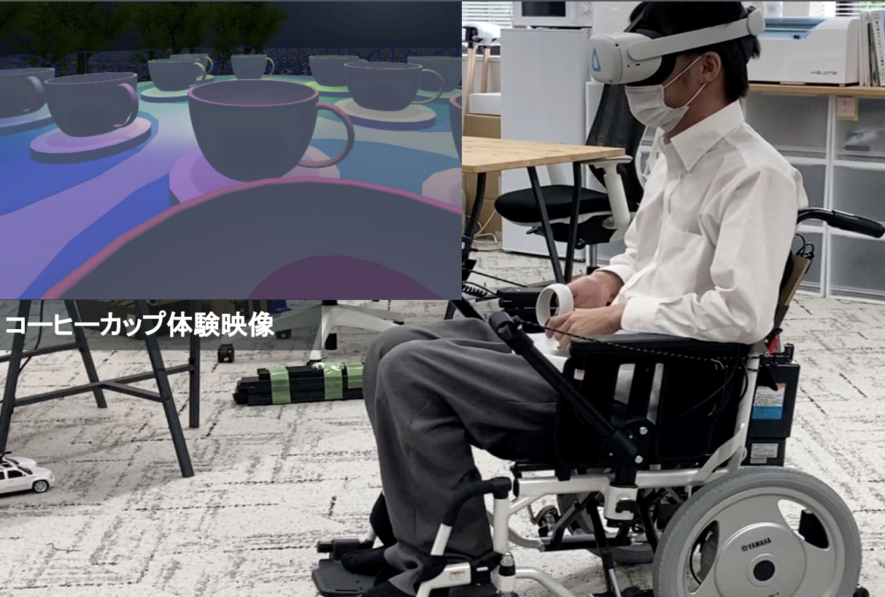
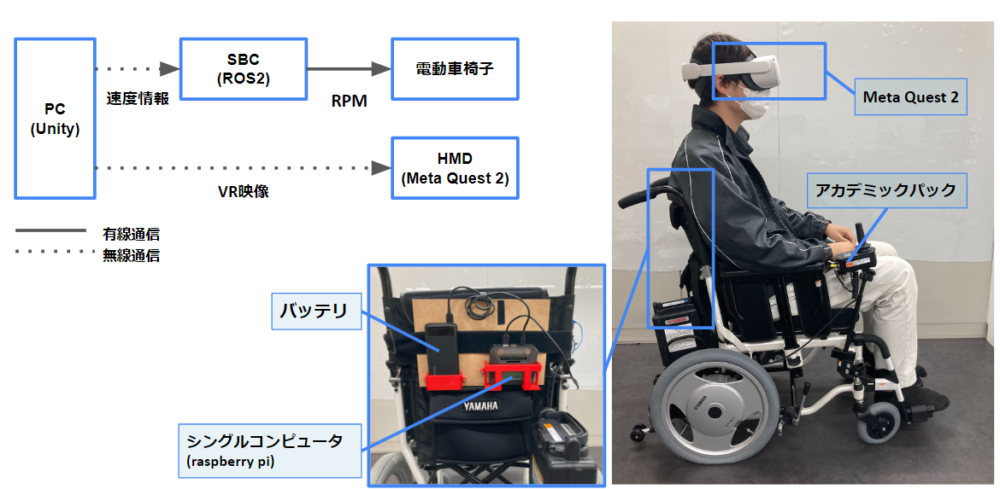
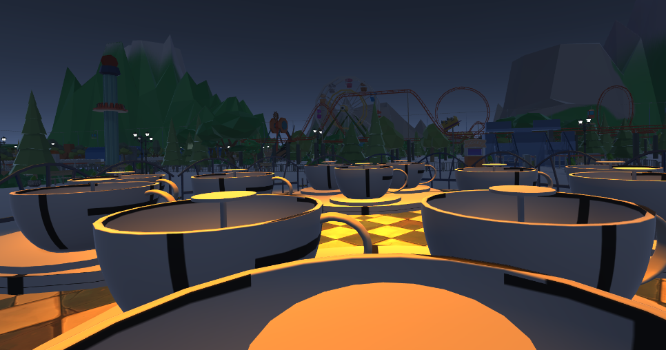

いつでもどこでもVRHMDと電動車椅子さえあれば、遊園地アトラクションのティーカップ体験ができるVRライドシステムを構築
  
モーションプラットフォーム化した電動車椅子とVRHMDを用いて、限られた空間においてもアトラクション体験を疑似的に提供するためには空間および速度の制限を考慮した MP の軌道パターンに関する調査が必要である．本研究ではティーカップ体験が複数の円盤の組み合わせによって速度の変化を作り出していることに注目し，各円盤の回転周期と方向および半径を反映させた4種類の軌道から臨場感および違和感について比較調査を行った．